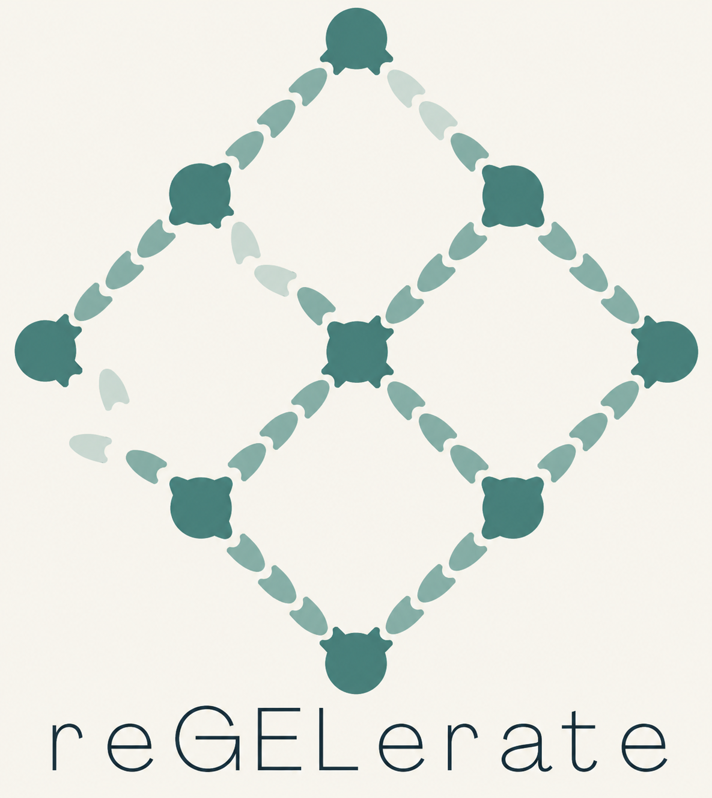

Look at the colony colour
In the right yeast reporter strain, Sup35 assembly can turn colonies from red to white—a change we can see directly.
COLONY PHENOTYPE
reGELerateiGEM · PROJECT WIKIreGELerate / iGEM PROJECT
We’re working on a protein gel that could assemble itself—and, one day, repair itself too.
Our starting point is a group of proteins that can join together into fibres. We want to connect those fibres into a useful material.
See how it could work ↘In this sketch, connecting proteins can bind before a fibre grows or join its free ends later. Each loop shows a different arrangement. We still need to test how these connections would work in the lab.
01 / THE IDEA
Some proteins can change shape and join together into long amyloid fibres. We’re interested in using this behaviour in yeast proteins, including Sup35 and Ure2, to make a gel.
Fibres alone won’t necessarily make a stable gel. We plan to add proteins with several binding sites to connect the fibres into a three-dimensional network, leaving small spaces between them.
The challenge is getting the fibres to connect.02 / CHECKING OUR WORK
We plan to look for evidence
in four different ways.
In the right yeast reporter strain, Sup35 assembly can turn colonies from red to white—a change we can see directly.
COLONY PHENOTYPEUre2 assembly changes how yeast uses nitrogen. Testing growth on selected nitrogen sources can help us detect that change.
SELECTIVE GROWTHWith a fluorescent GFP tag, clusters of protein can show up as bright spots inside a cell. These spots give us another clue that the proteins have gathered together.
FLUORESCENCEA technique called SDD-AGE helps separate large protein assemblies from smaller, soluble material. We’ll look for a smear near the top of the gel as evidence of larger assemblies.
GEL ELECTROPHORESIS03 / WHAT WE WANT TO TEST
If we can make a stable gel, we’ll test what it can do and how we can change it. These sketches show the experiments we have in mind.
Still questions, for now.First, we need to find out whether the connected fibres form a stable gel. Then we’ll measure how strong it is and the size of the spaces within it.
We want to try attaching GFP or useful peptides to the network, and check whether they still work once they’re attached.
If the network breaks, could fresh protein subunits help it reconnect? We’ll test whether adding them helps the material recover.
Yeast uses helper proteins called chaperones—including Hsp40, Hsp70 and Hsp104—to remodel some prion fibres. We want to find out whether they could help us take our material apart, too.
WITH THE SUPPORT OF
We’re grateful to the departments and companies helping us bring this project to life.
Our sponsors ↗